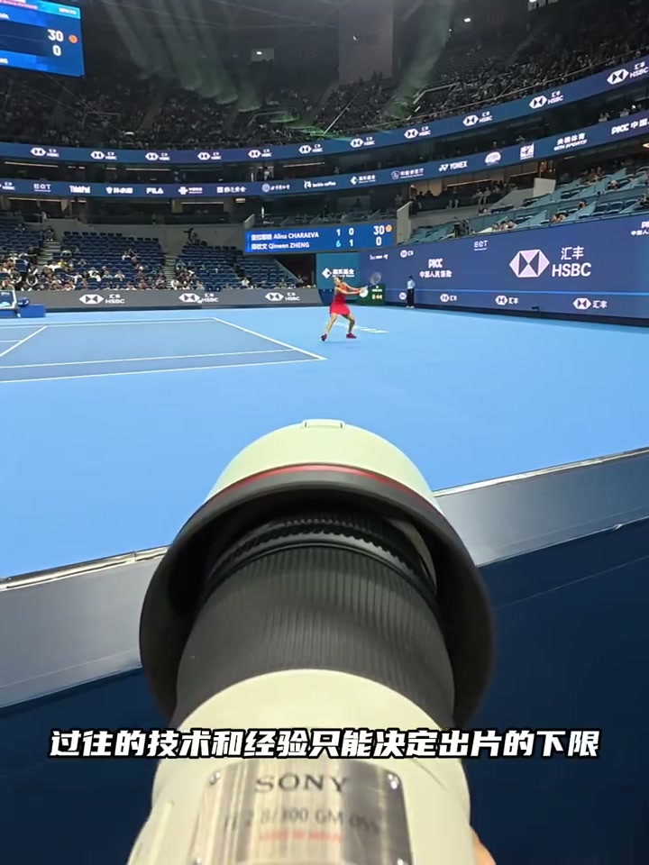
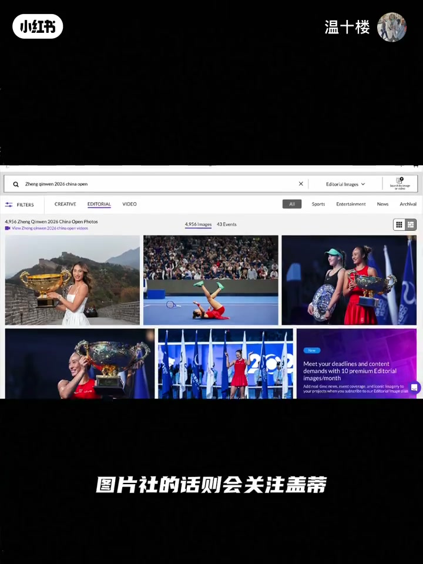
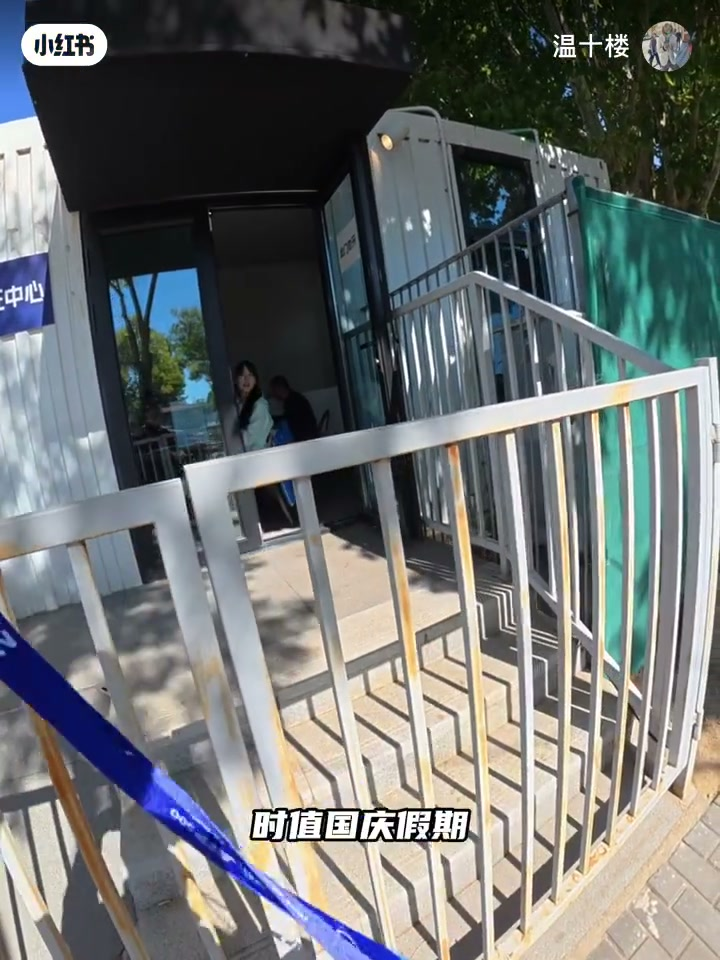
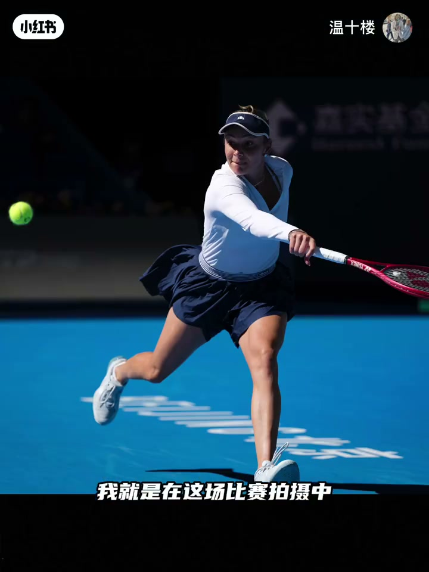
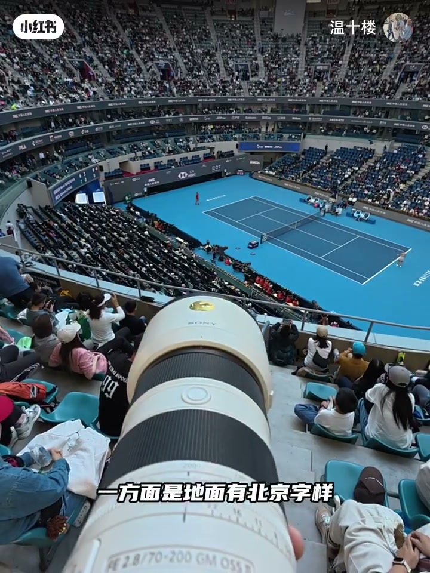
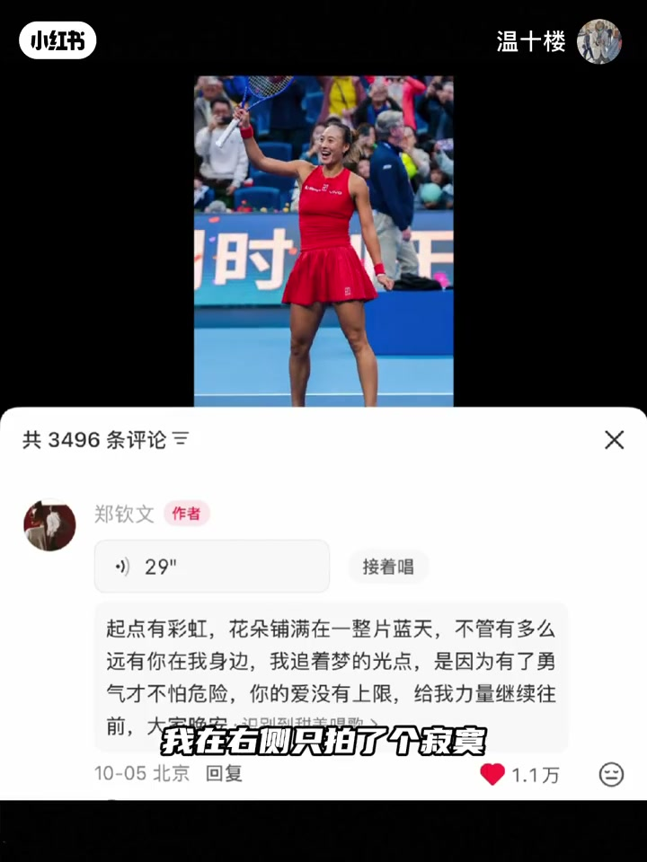
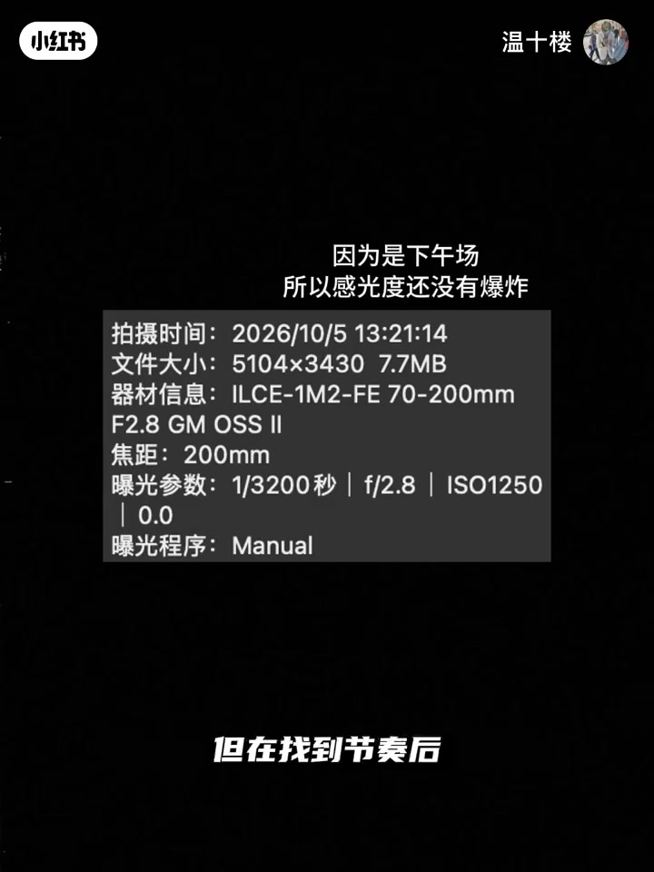
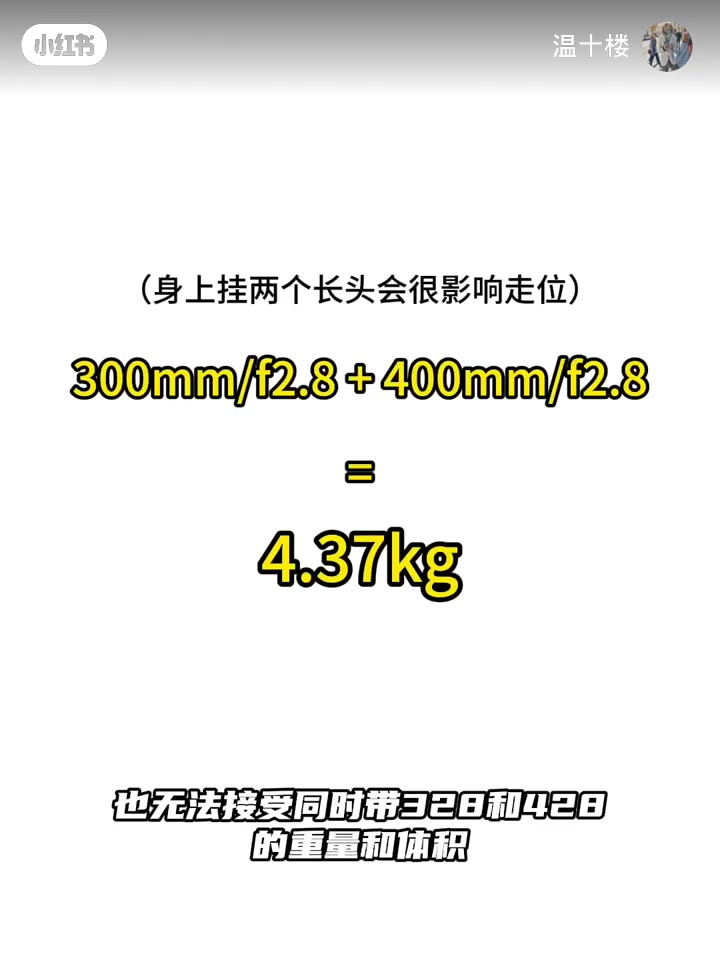
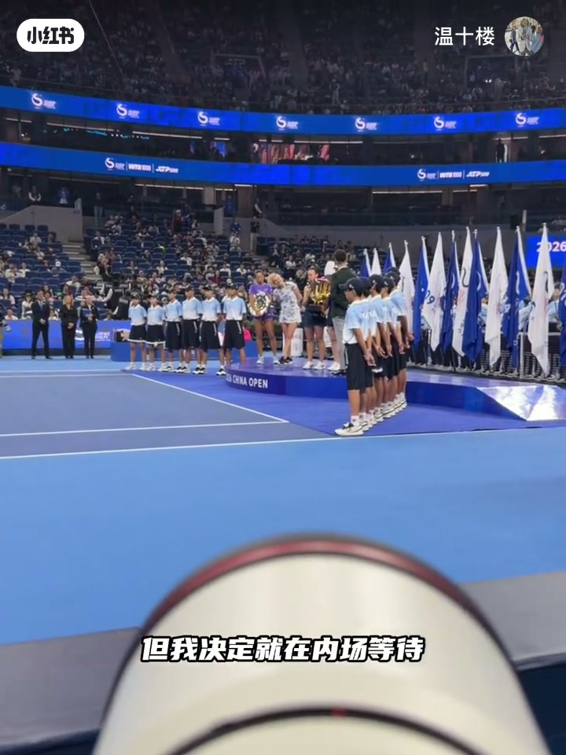
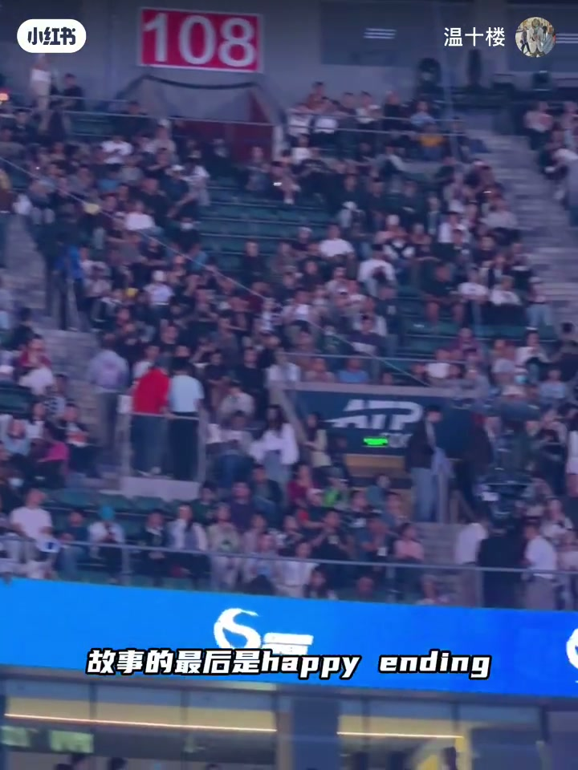

内容要点
温十楼以中网拍摄郑钦文为案例，回答「第一次拍网球的摄影记者，能拍好郑钦文吗」——结论是不能指望一次就「拍好」。过往技术只决定下限，上限靠持续实战试错。视频按准备、器材失误、点位策略、快门与焦段、决赛清场规则展开，并坦白三个错误。
知识结构
先大量读项目照片与转播；参考外通社、盖蒂、新华与中国体育报；郑钦文倒地庆祝更适合看台长焦。
国庆前才拿到记者证，第一天只有机身+85定；提前到场找手感，确认必须换更长焦，并远离广告墙。
右半场利于右手持拍正面；看台有「北京」新闻元素与干净背景；决赛球站错侧错过教练区庆祝。
近侧时 85 定成像更好；快门可从 1/3200 降到 1/2000 换低感；半决赛借到长焦后场边/看台分工。
决赛清场须先还马甲再排队；最终夺冠照片被人民日报体育报等采用。
新项目出片靠「功课+提前到场+点位试错+器材预案」；一次赛事拍不好很正常，持续实战才抬上限。
00:00-00:39结论先行：第一次拍不好，是正常的
标题即问题：第一次拍网球的摄影记者，能拍好郑钦文吗？作者先说结论——不能。过往技术与经验只能决定出片下限，上限要靠持续实战拍摄的积累和试错。今天就以中网为例，讲涉猎新项目时做的准备和犯过的错误。
准备功课分两块：一是阅读大量项目照片，了解规则与主要动作，常参考路透、法新，图片社看盖蒂，国内看新华社与中国体育报；二是看转播，摸清明星球员庆祝方式，再选机位与焦段。比如郑钦文喜欢倒地庆祝，看台拿 400 定往往比场边更好。


00:39-01:16错误一：没有提前准备器材
第一个错误很现实：10 月 4 日才知道记者证办下来，5 日就要拍，时值国庆假期完全来不及借器材。第一天只拿了机身和 85 定，焦段完全不够。
郑钦文当天下午 3 点对阵布兹科娃，他上午 11 点就到场，先拍斯瓦泰克对维基奇找手感。无论什么项目，提前到场熟悉摄影点位、按比赛节奏找手感都非常必要。这场让他明确必须用更长镜头，也发现场中位置广告太多——保底照片拍完后应迅速向两侧转移，用低出片率换干净画面。


01:16-01:55点位策略，以及错过庆祝的第二错误
郑钦文比赛第一局他先在右半场：右手持拍运动员击球时身体正面会转向镜头，还可以越过球网拍对面救球、发球。第二局上看台——地面有「北京」字样，运动员与城市同框增加新闻元素，背景也更干净，击球与全身动作更舒展。
第三局犯了第二错：郑钦文在右侧打出决胜球，他也在右侧；比赛结束对方简单庆祝后却走到左侧教练区表演「神经小将」，右侧只拍了个寂寞。吃完教训后，他几乎每场都穿到教练所在那侧拍庆祝。


01:55-02:5085定出片、快门降速与长焦取舍
令他没想到的是，最终仍有不少 85 定出片：郑钦文靠近这一侧击球、救球、庆祝时，85 焦段刚刚好，大光圈定焦成像又是变焦比不了的。
曝光上，最初为了不糊用到 1/3200 秒，找到节奏后降到 1/2000；更熟项目的老记甚至用 1/1250 或更慢——网球回合多、拍摄机会多，成片保证人脸清楚即可，球拍糊不重要，降快门换低感非常划算。
半决赛前终于借到长焦。他犹豫过只拿一支中长焦，还是同时背两支超长焦；既无法接受夜间场边过高感，也无法接受双炮体积重量，最后选择场边用 70-200 一类方案、看台再用更长焦。还有个插曲：借设备在楼下保安登记时，桌上人民日报正好刊登他拍的郑钦文，与封面选图一致。


02:50-03:37错误三：决赛清场规则，以及 happy ending
随着郑钦文晋级，摄影记者越来越多。决赛前犯了第三错：拍完女双决赛才五点多，他决定就在场边等；结果决赛规则不同，场边要清人，必须先归还摄影马甲再重新排队领取。等他反应过来，前面已排起长队——若马甲被领完，再多想法也实现不了。
故事最后是 happy ending：郑钦文经历伤病低谷后重回巅峰，拿下中网女单冠军；他也顺利完成拍摄，照片被人民日报体育报等多家媒体采用。最后祝大家拍出好照片。


详细文字转录
以下内容按 Whisper 原始分段完整呈现，已转简体并校正明显术语；焦段口述数字可能有识别误差。
-
第一次拍网球的摄影记者能拍好郑钦文吗
-
先说结论 那就是不能
-
过往的技术和经验只能决定出片的下限
-
而上线的提升要靠持续实战拍摄的积累和试错
-
今天就以中网拍摄为例
-
讲讲涉猎一个新项目时我做的准备和所犯的错误
-
首先是阅读大量的项目照片
-
了解比赛规则和主要的比赛动作
-
我最常参考外通社的作品
-
如路透社和法新社
-
图片社的话则会关注盖蒂
-
国内则主要关注新华社和中国体育报
-
这些机构都有专职的体育摄影记者
-
日常发稿也会覆盖大量的高级别赛事
-
其次还要看转播
-
了解明星球员的庆祝方式
-
来选择不同的拍摄位置和镜头焦段
-
比如郑钦文喜欢倒地庆祝
-
那么在看台拿400锭拍摄的效果就比在那场更好
-
而我犯的第一个错误则是没有提前准备器材
-
因为10月4日我才知道记者证办下来了
-
而我要去拍5日的比赛
-
时值国庆假期是完全来不及借器材
-
所以第一天我只拿了个T20和85锭
-
焦段是完全不够的
-
郑钦文是当天下午3点对阵布兹科娃
-
而我上午11点就到赛场了
-
开始拍摄斯瓦泰克对阵维基奇的比赛
-
不管拍摄什么项目
-
提前到场熟悉摄影点位
-
并依据比赛节奏找拍摄手感都是非常非常必要的
-
我就是在这场比赛的拍摄中
-
明确自己必须使用更长的镜头
-
也发现在场中位置拍摄时背景的广告太多
-
应该在保底照片拍完之后就迅速向两侧转移
-
用低出片率换干净的画面
-
随后郑钦文的比赛中
-
我第一局是先在右半场拍摄
-
因为我发现右手持拍的运动员在击球的时候
-
身体正面会转向镜头
-
此外还可以越过球网
-
拍摄对面的救球发球等等画面
-
第二局我就上看台了
-
一方面是地面有北京字样
-
运动员和北京同框属于增加照片的新闻元素
-
另一方面是照片的背景比较干净
-
击球和全身动作也更舒展
-
第三局的时候我就犯了第二个错误
-
郑钦文在右侧场地打决胜球
-
而我也在右侧拍摄
-
但是比赛结束他简单庆祝后
-
直接就走到教练员在的左侧场地表演「神经小将」庆祝去了
-
我在右侧只拍了个寂寞
-
吃完这个教训
-
后面我几乎每场都穿到教练在的那侧拍摄庆祝了
-
令我没想到的是
-
我最终还是用85定出片了
-
因为郑钦文在靠近我这侧击球救球庆祝的时候
-
85焦段是刚刚好的
-
而大光圈定焦镜头的成像
-
又是720完全没办法比的
-
在曝光参数上
-
最开始为了出片不糊
-
我的快门是用到了3200分之一秒
-
但在找到节奏后
-
慢慢降到了2000分之一秒来拍比赛
-
如果是更熟悉项目的老记者
-
会用到1250分之一秒
-
甚至更慢的快门
-
这是因为网球的回合很多
-
有大把的拍摄机会
-
而成片只要确保人脸清楚就行了
-
球拍糊不糊是不重要的
-
所以降低快门速度来换低感光度
-
以提高画面质量就非常划算了
-
拍半决赛之前
-
我是终于借到了长焦镜头
-
我之前也犹豫过是只拿140 4.5
-
还是同时用428和328
-
但是我既无法接受140
-
在那场夜间拍摄时的高感光度
-
也无法接受同时带328和428的体积和重量
-
在全横出片和便携之后
-
最后是选择在那场用328
-
再看台用445作为长焦的解决方案
-
这里还有个好玩的事
-
就是我借设备在楼下保安那登记的时候
-
看见他桌子上摆著一张人民日报
-
上面刚好就是我拍的郑钦文
-
不得不说图片编辑还是有眼光
-
跟我的封面图选了同一张
-
再往后随著郑钦文的一路升级
-
比赛热度越来越高
-
摄影记者也越来越多
-
决赛前我就犯了第三个错误
-
当时拍完女双决赛才5点多
-
但我决定就在那场等著
-
结果决赛跟前面每场的规则都不一样
-
那场要清人
-
我得先归还摄影马甲再重新排队领取
-
等我知道这个事的时候
-
前面已经排起长队了
-
我当时真是焦虑的很
-
如果马甲被领完
-
我有再多的想法都实现不了了
-
当然故事的最后是happy ending
-
郑钦文在经历伤病低谷后重回巅峰
-
拿下中网的女单冠军
-
而我也顺利完成拍摄
-
照片里包括人民日报体育报
-
等等多家媒体采用
-
最后祝大家拍出好拍决赛
-
拜拜